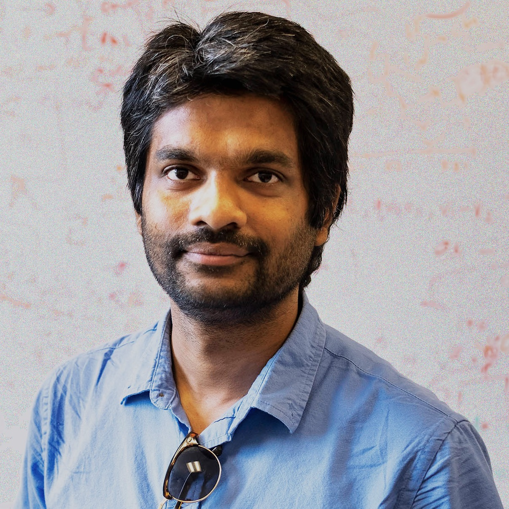

Language and Vision research has rapidly evolved in recent years, driven by the emergence of large vision-language models (LVLMs). Earlier paradigms focused on passive perception, annotated data, and templated language, whereas today's research addresses active perception, self-supervised learning, open-ended natural language, and real-world deployment. These advances have had a profound impact both within NLP/CV research fields and across domains such as robotics, healthcare, and education.
This workshop covers (but is not limited to) the following topics:
Long papers may consist of up to 8 pages of content, plus unlimited pages for references and an appendix; final versions of long papers will be given one additional page of content (up to 9 pages) so that reviewers' comments can be considered.
Short papers may consist of up to 4 pages of content, plus unlimited references and an appendix. Short papers will be given 5 content pages in the proceedings upon acceptance. Authors are encouraged to use this additional page to address reviewers' comments in their final versions.
We are also including a non-archival track to allow dual submission of work to ALVR 2026 and other conferences/journals. Space permitting, these submissions will still participate and present their work in the workshop and will be hosted on the workshop website but will not be included in the official proceedings. Please apply the ACL format and submit through openreview but indicate that this is a cross-submission (non-archival) at the bottom of the submission form.
The submission website is https://openreview.net/group?id=aclweb.org/ACL/2026/Workshop/ALVR.
Call for Reviewers: We are actively recruiting reviewers with expertise in multimodal learning, vision-language models, and related areas. If you are interested, please sign up here: Reviewer Sign-up Form .
Contact the Organizing Committee: alvr_workshop_acl_2026@googlegroups.com.
| Time (PDT) | Event | Who |
|---|---|---|
| 9:00–9:10 | Opening Remarks | Workshop Organizers |
| 9:10–9:50 | Invited Talk: Limitations of Current Vision Language Models | Raymond J. Mooney |
| 9:50–10:30 | Invited Talk 2 | Lianhui Qin |
| 10:30–11:00 | Coffee Break | |
| 11:00–12:00 | Spotlight Session (6 × 10 min) | |
| 12:00–13:30 | Lunch Break | |
| 13:30–14:10 | Multimodal Learning Through Synthetic Data: Generation, Evaluation and Production | Amir Zadeh |
| 14:10–14:50 | Long-Horizon Video Reasoning and Generation | Mohit Bansal |
| 14:50–15:30 | Poster Session | |
| 15:30–16:00 | Coffee Break | |
| 16:00–16:40 | Invited Talk 5 | Jiajun Wu |
| 16:40–17:40 | Panel Discussion | All Speakers |
| 17:40–18:00 | Closing Remarks | Workshop Organizers |

Dr. Mohit Bansal is the John R. & Louise S. Parker Distinguished Professor and the Director of the MURGe-Lab (UNC-AI Group) in the Computer Science department at the University of North Carolina (UNC) Chapel Hill. He received his Ph.D. in 2013 from the University of California at Berkeley (where he was advised by Dan Klein) and his B.Tech. from the Indian Institute of Technology at Kanpur in 2008. His research expertise is in multimodal generative models, reasoning and planning agents, faithful language generation, and interpretable, efficient, and generalizable deep learning. He is an ACL and AAAI Fellow and recipient of the Presidential Early Career Award for Scientists and Engineers (PECASE), IIT Kanpur Young Alumnus Award, DARPA Director's Fellowship, NSF CAREER Award, Google Focused Research Award, Microsoft Investigator Fellowship, Army Young Investigator Award (YIP), DARPA Young Faculty Award (YFA), and outstanding paper awards at ACL, CVPR, EACL, COLING, CoNLL, and TMLR. He has been a keynote speaker for the ECAI 2025, ACM-CODS 2025, AACL-IJCNLP 2023, CoNLL 2023, and INLG 2022 conferences. His service includes EMNLP Program Co-Chair, CoNLL Program Co-Chair, and ACL Executive Committee, ACM Doctoral Dissertation Award Committee, ACL Doctoral Dissertation Award Co-Organizer, ACL Mentorship Program Co-Founder, and Associate Editor-in-Chief for TPAMI, and Associate Editor for TACL, CL, IEEE/ACM TASLP, and CSL journals.
Dr. Raymond J. Mooney is a Professor in the Department of Computer Science at the University of Texas at Austin. He received his Ph.D. in 1988 from the University of Illinois at Urbana/Champaign. He is an author of over 160 published research papers, primarily in the areas of machine learning and natural language processing. He was the President of the International Machine Learning Society from 2008-2011, program co-chair for AAAI 2006, general chair for HLT-EMNLP 2005, and co-chair for ICML 1990. He is a Fellow of the American Association for Artificial Intelligence, the Association for Computing Machinery, and the Association for Computational Linguistics and the recipient of best paper awards from AAAI-96, KDD-04, ICML-05 and ACL-07.
Dr. Amir Zadeh is a Staff ML Researcher at Lambda. His focus is on scalable multimodal learning for world modeling. He received his Ph.D. in Artificial Intelligence from Carnegie Mellon University, with the main focus on multimodal machine learning. He has received honors such as best paper runner ups in ML conferences as well as being the recipient of Yahoo Fellowship during his Ph.D. Dr. Zadeh has published more than 50 papers in top conferences in machine learning including NeurIPS, ICLR, CVPR and ACL, and more. He has served as organizer, senior area chair and committee member in top conferences and workshops.
Dr. Lianhui Qin is an Assistant Professor in the Computer Science Department at UC San Diego. Her research interests broadly span natural language processing, machine learning, and artificial intelligence. She received her PhD from University of Washington (UW, NLP) working with Yejin Choi.
Dr. Jiajun Wu is an Assistant Professor of Computer Science and, by courtesy, of Psychology at Stanford University. His group studies physical scene understanding---building machines that see, reason about, and interact with the physical world. Besides learning algorithms, what are the levels of abstraction needed by AI systems in their representations, and where do they come from? Before joining Stanford, He was a Visiting Faculty Researcher at Google Research, working with Noah Snavely. He finished my PhD at MIT, advised by Bill Freeman and Josh Tenenbaum
Contact the Organizing Committee: alvr_workshop_acl_2026@googlegroups.com